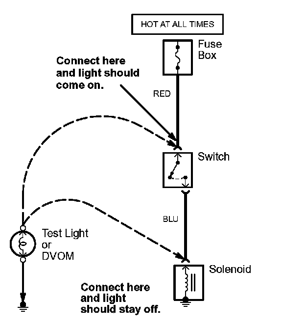
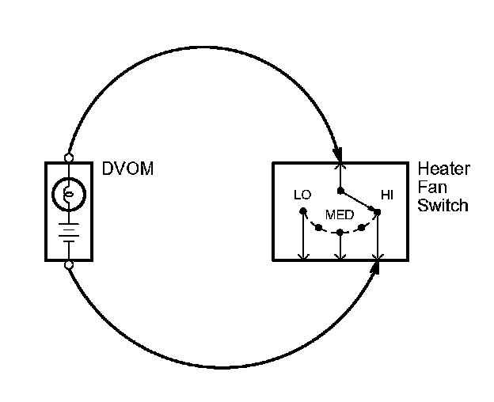
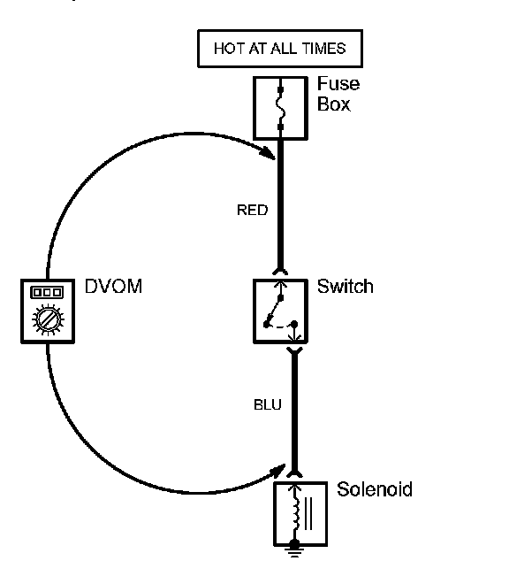
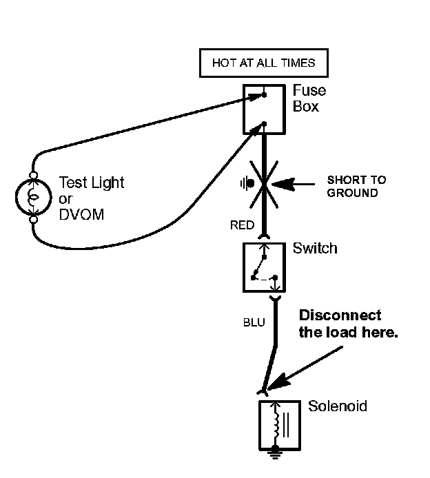

Troubleshooting Tests
Troubleshooting TestsTesting for Voltage
When testing for voltage at a connector without wire seals, you do not have to separate the two halves of the connector. Instead, probe the connector from the back. Always check both sides of the connector because dirty, corroded, and bent terminals can cause problems (no electrical contact = an open).
1. Connect one lead of the test light to a known good ground, or, if you're using a digital volt ohmmeter (DVOM), place it in the appropriate DC volts range, and connect its negative lead to ground.

2. Connect the other lead of the test light or DVOM to the point you want to check.
3. If the test light glows, there is voltage present. If you're using a DVOM, note the voltage reading. It should be within one volt of measured battery voltage. A loss of more than one volt indicates a problem.
NOTE: Always use a DVOM on high impedance circuits. A test light may not glow (even with battery voltage present).
Testing for Continuity
When testing for continuity at a connector without wire seals, you do not have to separate the two halves of the connector. Instead, probe the connector from the back. Always check both sides of the connector because dirty, corroded, and bent terminals can cause problems (no electrical contact = an open).
1. Disconnect the negative cable from the car battery. If you're using a DVOM, place it in the lowest "OHMS" range.
2. Connect one lead of a DVOM to one end of the part of the circuit you want to test.

3. Connect the other lead to the other end.
4. If you're using a DVOM, a low reading or no reading (zero), means good continuity.
Testing for Voltage Drop
Wires, connectors, and switches are designed to conduct current with a minimum loss of voltage. A voltage drop of more than one volt indicates a problem. Circuits must be operating when checking voltage drop.
1. Place the digital volt/ohmmeter (DVOM) in the appropriate DC volts range. Connect the positive lead to the end of the wire (or to the connector or switch) closest to the battery.

2. Connect the negative lead to the other end of the wire (or the other side of the connector or switch).
3. Turn on the components in the circuit.
4. The DVOM will show the difference in voltage between the two points. A difference, or drop, of more than one volt indicates a problem. Check the circuit for loose, dirty, or bent terminals.
Testing for a Short with a Test Light or DVOM
1. Remove the blown fuse and disconnect the load.
2. Connect a test light or digital volt/ohmmeter (DVOM), switched to the appropriate DC volts range, across the fuse terminals to make sure voltage is present. You might have to turn the ignition switch to ON; check the schematic to see.

3. Beginning near the fuse box, wiggle the harness. Continue this at convenient points about six inches apart while watching the test light or DVOM.
4. Where the test light goes off, or the DVOM voltage drops to zero, there is a short to ground in the wiring near that point.
NOTE: Always use a DVOM on high impedance circuits. A test light may not glow (even with battery voltage present).